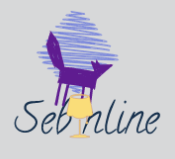

<p>
    <mat-toolbar class="box-shadow">
        <div class="w-full flex justify-between items-center">
            <span
                class="grid grid-flow-col auto-cols-max items-center cursor-pointer"
                [routerLink]="['/post-feed']"
            >
                
                <span class="text-shadow text-green-800"> Sebo Online</span>
            </span>
            <div class="flex items-center">
                <a
                    routerLink="/post-feed"
                    [ngClass]="{
                        'active-icon relative' : router.url === '/post-feed'
                    }"
                    class="flex items-center"
                >
                  <span class="material-icons">
                    auto_stories
                  </span>
                </a>


              <a
                routerLink="/profile"
                [ngClass]="{
                        'active-icon relative' : router.url === '/profile'
                    }"
                class="flex items-center ml-12"
              >
               <span class="material-icons">
                people
              </span>
              </a>


              <a
                routerLink="/search"
                [ngClass]="{
                        'active-icon relative' : router.url === '/search'
                    }"
                class="flex items-center ml-12"
              >
                <span class="material-icons">
                  person_search
                </span>
              </a>

            </div>
          <button mat-raised-button (click)="logout();" style="margin:10px"> Sair</button>
        </div>
    </mat-toolbar>
</p>
